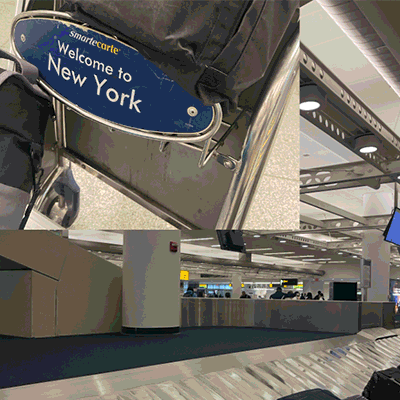

LUYI HUANG
Table of Contents
1 – Systems
ArchiAI
A system mapping of of Auto Architecture Design for real world .

What is the system?
This is the online SYSTEM that allows the user who wants to design their own home or small business space, even one entirely new building. The key ELEMENTs will be users, ideas, rules/algorithms, genetic structure, designers, and the solution. The solution could generate by multiple rounds. The Function of AchiAI - The User/Client just put their ideas which could be works, images, or any other inspiration into the website. And upload the floor plans or other construction documents into the web too. Then the website will auto-generate one design solution for the user. It could be the first-round design. The second round could involve the real-person architect-designer in the design loop.
A “system,” as the term is commonly understood, represents an amalgamation of diverse elements that, when interconnected, work in a harmonious and organized manner to accomplish a designated outcome. A thoughtful analysis of this definition reveals a triadic structure inherent to any system - namely, constituent elements, their interrelationships, and a guiding purpose or function.


Stocks and Flows
In ArchitAI's architectural framework, "stocks" serve as a vital cornerstone, embodying both tangible and intangible resources integrated into a building's blueprint. Physical stocks include foundational elements such as building materials, water, and energy, all essential for a structure's form and function. Concurrently, ArchitAI also recognizes the significance of intangible assets, like light levels influencing visibility and ambiance, air quality impacting occupants' health and comfort, and thermal comfort affecting temperature balance within the premises. These intangible components, although not physically touchable, critically influence the building's overall comfort and functionality. Each stock, tangible or intangible, is integral and contributes to the sustainable and efficient operation of the building.
Contrasting these static stocks, ArchitAI employs "flows" to depict the movement and transformation of these resources within the architectural design. Energy provides a clear example: it flows into the building as electrical power, is converted into different forms such as light, heat, or mechanical work to fulfill various building requirements, and then exits the building, typically as waste heat. A similar flow can be observed with water: it enters through pipes, participates in numerous functions like sanitation and cooling, and finally leaves as wastewater. The primary goal of ArchitAI lies in accurately simulating these flows, equipping architects with a comprehensive understanding of resource movement and transformation within their design. This detailed simulation is pivotal in allowing architects to optimize their designs for enhanced resource efficiency, sustainability, and occupant comfort.
"ArchitAI is an advanced AI system designed to revolutionize the field of architecture and building design. "
Feedback Loop
To ensure these flows are well-balanced and resource usage is optimized, ArchitAI incorporates the concept of "feedback loops." Feedback loops serve as the system's adaptive mechanism, continually adjusting the flows based on the current state of the stocks. For instance, a feedback loop could include sensors monitoring room temperature and subsequently modulating energy flow to the HVAC system to maintain optimal thermal comfort. ArchitAI's robust simulation capabilities, combined with its feedback mechanisms, can help architects design structures that dynamically adjust to their environment or changes in occupancy. This dynamic response results in enhanced sustainability and efficiency, minimizing resource wastage while ensuring occupants' comfort.
Furthermore, the ArchitAI system also accommodates human feedback loops, enabling architects and users to evaluate the system's performance and provide inputs that further refine the AI algorithms. This cooperative interaction ensures that ArchitAI continually improves its performance, adapting to the unique needs of each project and user. In essence, ArchitAI's architecture represents a significant advancement in building design methodology. By understanding and optimizing stocks and flows and leveraging feedback loops for continuous improvement, it promises to pave the way for a new era of sustainable, efficient, and user-centric building design.


2 – Authorship
Traveling NYC
Luyi, Wenxi, Dan
THE BIG AGGREGATE:

UNIQUE NEW YORK
CHATGPT + THE CITY
.
You’ve visited New York. And if you haven’t visited New York you might have an idea about what a visit to New York would be like, an imagined track of sites and experiences. Does anyone travel through a unique New York? We asked ChatGPT to generate an itinerary, and then found three ways through three mornings/evenings/nights in the city.
We asked ChatGPT to generate a plan for three days in New York, and asked DALL-E to visualize various points along the way. We started with photos contributed to google maps and similar location intelligence or place-based digital platforms (THE BIG AGGREGATE) and asked ChatGPT to help us contextualize more experiential, sensorial, or affective threads within the very same photos and reviews (UNIQUE NEW YORK). Closing the loop, we then simply asked DALL-E to create its own scrapbook of the itinerary ChatGPT devised for it (CHATGPT AND THE CITY) – revealing an uncanniness between user contributed images and those generated by AI.

THE BIG AGGREGATE
Standard tourist experience
UNIQUE NEW YORK
Narrative personal experience
CHATGPT + THE CITY
Generative travel experience
Day 1 Evening

Itinerary of "Dinner at a Local Restaurant"+Google image/ Instagram

Get tour review from Tripadvisor + GPT Summary + DALL.E

GPT generates the prompt of "Dinner at a Local Restaurant" for DALL.E
Day2 Morning

Itinerary of "Visit the Statue of Liberty and Ellis Island"+Google image/ Instagram

Get tour review from Tripadvisor + GPT Summary + DALL.E"

GPT generates the prompt of "Visit the Statue of Liberty and Ellis Island" for DALL.E
Day2 Evening

Itinerary of "Attend a Broadway show"+Google image/ Instagram

Get tour review from Tripadvisor + GPT Summary + DALL.E

GPT generates the prompt of "Attend a Broadway show or live music performance" for DALL.E
Day3 Evening

Itinerary of "Explore Chinatown"+Google image/ Instagram

Get tour review from Tripadvisor + GPT Summary + DALL.E

GPT generates the prompt of "Explore Chinatown" for DALL.E
How do you author an experience? And how do you author a place? A visit to NYC, mediated by a model trained on massive amounts of media generated by millions of visits to NYC (66 million visited in 2019 alone) reveals patterns and limits in how places on a tourist’s itinerary are seen, experienced, and shared. Photos of NYC landmarks tend to look the same, and many visitors and residents likely have very similar experiences of sites like Times Square, but there are multitudes here, in the very same place, that may elude AI modeling – and they’re important.
Each take on the ChatGPT-produced itinerary mirrors some of the limited avenues for authorship that tourists following an itinerary might face. What are all of the branching decision points within the very first prompt “Arrive in NYC”? What are the linguistic, class, racial, experiential intersections with what it means to “arrive” in a place that you’re visiting, especially one as complex as the city.
There is an algorithmic logic to traveling through NYC, and even more so by AI prompt. Sites have been made legible for selling and showing off the city for visitors for century, and they’re a vital part of what makes New York New York.
Reading Response
In the intersection of architectural design and AI graphics, my authorship philosophy manifests as a blend of collaboration, transparency, and ethical responsibility.
I view AI as a powerful tool augmenting human creativity rather than replacing it. Both expert users, such as architects, and non-experts, like clients or the public, should have room to interact with AI, influencing its operation and outcomes. For instance, architects might harness specific algorithms for intricate tasks like structural analysis or energy optimization, while non-experts might adjust aesthetic parameters or building functionality. This is demonstrated in the collaborative approach of Rhino's Grasshopper tool, allowing users at different expertise levels to engage in the design process through generative algorithms.
Transparency remains at the forefront, where both human designers and AI tools' roles are clear. In this partnership, AI, such as Runway ML, acts as a tool manipulated by the designer, who subsequently retains copyright of the resultant designs. AI, being devoid of creative intent or consciousness, does not hold copyrights.
Ethical responsibility plays a pivotal role in this realm. Developers, users, and businesses should jointly ensure the ethical use of AI, especially regarding data privacy. Tools like Autodesk's Refinery showcase this balance, emphasizing ethical data usage while facilitating expansive design exploration.
Control over AI should be distributed, with human designers taking the lead in directing AI's operation and selecting among generated options. As for authorship levels, architects or designers, as User Authors, guide the design process, influencing the AI tool. Program Authors, developers like myself, shape the AI's operational rules and boundaries. Finally, Masses Authors represent the collective data used for AI training, highlighting the importance of ethical and responsible data use.
3 – Politics
Lovely Home
A spatial analysis with multiple forms of data.

Playtool
4 – Governance
Your Mode shows in a Plant
This is a project that about face analysis reconfiguration detector to read your emotion on your face and you mode will show in the AR Plant at your home. Which we can your emotion change through the plant.